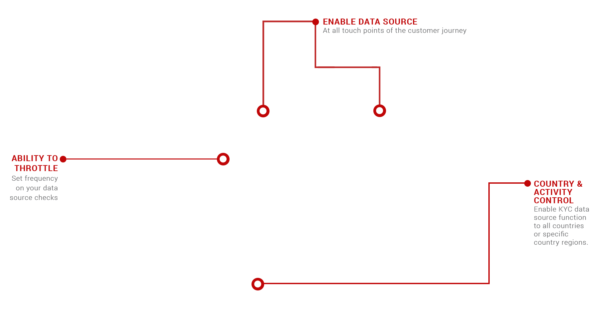
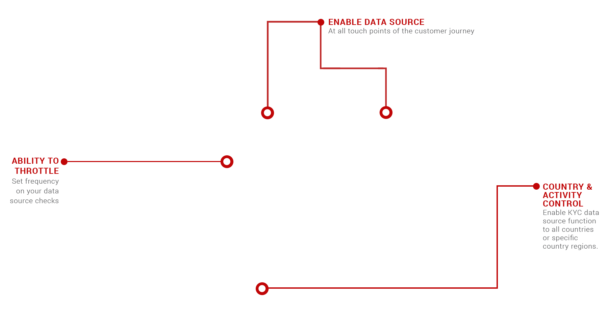

Future Proof KYC
One platform to fully support your KYC regulatory requirements for today's compliance and when regulations update as digital engagement evolves.
Industry KYC solutions
Compliance confidence and peace-of-mind
Our risk and compliance consultants have over 15+ years in the industry and will provide you with full KYC guidance to ensure you activate the right KYC data sources required specific to your industry and transactional regions regulatory obligations. We also work with your operations team to ensure the accurate configuration of KYC rules to obtain optimal fraud protection to maximise your business performance.
400+ KYC data sources
Instantly available to activate
Say good-bye to multiple KYC integrations and inefficient KYC management. With over 400 industry leading KYC data sources integrated into our platform and more continually being added, you'll have instant access to all the KYC you require to obtain compliance and premium fraud prevention.
Deploy In Real-Time
Entering a new market? Need to activate additional IDV? Want interactive real-time document identification? No problem. Our platform deploys KYC data sources you activate in real-time. Simply select, activate, configure KYC settings, and any additional rules configurations and you're done.
KYC On-Demand
We strive to make KYC quickly and easily attainable and to create a true one-stop KYC solution. If you require an additional data source that is not currently integrated into our KYC suite, our integration team will implement it into our 4S platform for you, within a 10-day SLA integration.
Flexible Integration
Our platform integrates into any new or legacy platform and is built with advanced customisation to work with your existing KYC. Whether you want to bring your own data, bring your own pricing for external checks or utilise our end-to-end data aggregated solutions the choice is yours.
KYC global coverage
No matter your region, we have you covered
Our integrated KYC data sources cover 35+ countries with region specific featured KYC data checks, layered with full global coverage checks on the address, phone, watchlists, email, geo, device and much more. You'll have everything you need to perform premium KYC, regardless of where you're transacting and expand your global market with ease.
Real-time Automated Verifications
With the ability to blacklist instantly at the point of registration to on-board each and every time with confidence.


Automatic KYC
Waterfall Logic
Once you activate your required KYC data sources, simply select the order in which you would like them to perform in the waterfall tier. Giving you full control on your KYC to ensure the maximum customers are on-boarded and verified with minimal friction and in the most cost-efficient manner possible.
Manage Multiple Merchants With Ease
Effortless set, update and manage your KYC configurations specific to each merchant, and with our platforms quick filters and all-in-one actions you can apply KYC configurations that are consistent for all your merchants in a matter of seconds, with just a few clicks.
Easy KYC Setup
Loaded with customisation and features that are activated in just a few clicks.
 

Grow Globally
Enter new markets around the globe quickly and with confidence. Create customer and whole market profiles and activate any KYC required for the expansion in real-time.
IT Independent
Enjoy zero touch on your internal dev. resources. Whether you need to activate a new KYC, aggregate data, or configure new risk rules, our Data Scientists are available to help.
Future Proof
As global regulation requirements change and update, you can activate any KYC service instantly from our 400+ data source library or add one within a 10-day SLA integration.

Download KYC & Compliance Solution.
Download and share with your operations team our 4S platform features and how we can future-proof your KYC for compliance via a single API integration.
Download KYC Data Sources Coverage.
4Stop has integrated hundreds of KYC data sources to provide you with true world-wide coverage. Please contact sales@4stop.com to receive further KYC specific country coverage.
 Follow us
Follow us